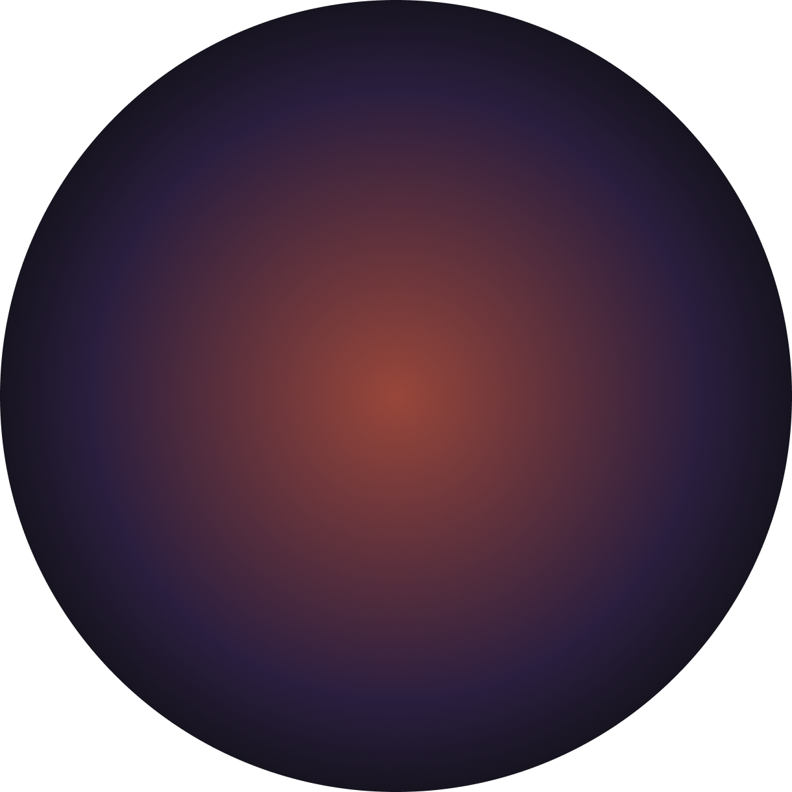
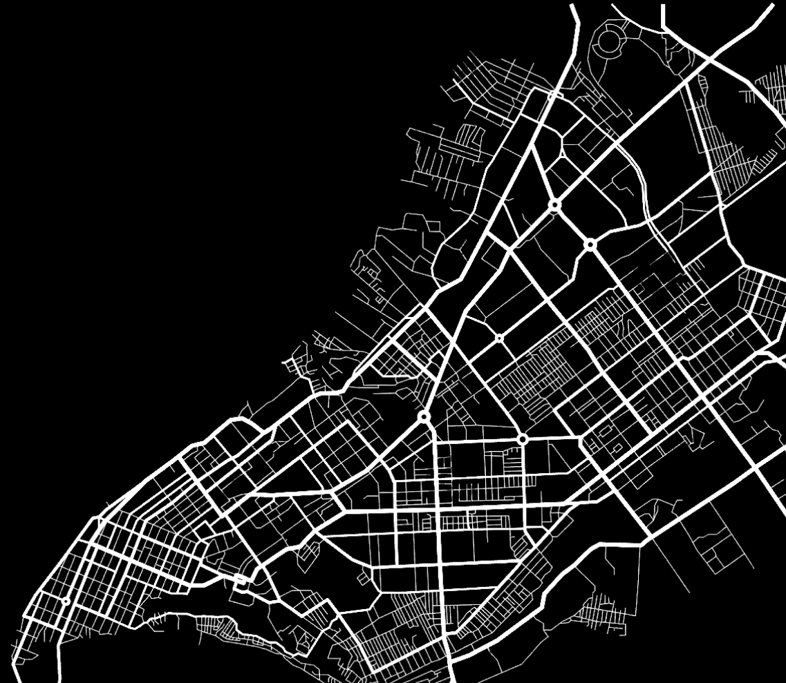

Інструмент для трансформації міського простору
Завантажте план вашої території, і ми покажемо, як вона може перетворитися на зручний, пішохідний простір із зеленими зонами та сучасною інфраструктурою


Завантажте план вашої території, і ми покажемо, як вона може перетворитися на зручний, пішохідний простір із зеленими зонами та сучасною інфраструктурою